Introducere
Numerele paginilor pot fi folosite pentru a numerota automat fiecare pagină din document. Ele vin într-o gamă largă de formate de numere și pot fi personalizate pentru a se potrivi nevoilor dumneavoastră. Numerele paginilor sunt de obicei plasate în antet , subsol sau marginea laterală. Când trebuie să numerotați diferite pagini, Word vă permite să reporniți numerotarea paginilor.
Pentru a adăuga numere de pagină:Word poate eticheta automat fiecare pagină cu un număr de pagină și o poate plasa într-un antet, subsol sau margine laterală. Dacă aveți un antet sau un subsol existent, acesta va fi eliminat și înlocuit cu numărul paginii.
- În fila Inserare, faceți clic pe comanda Număr pagină.
- Deschideți meniul Începutul paginii, Partea de jos a paginii sau Marginile paginii, în funcție de locul în care doriți să fie poziționat numărul paginii, apoi selectați stilul de antet dorit.
- Va apărea numerotarea paginilor.
- Apăsați tasta Esc pentru a bloca antetul și subsolul.
- Dacă trebuie să faceți modificări numerelor paginii dvs., faceți dublu clic pe antet sau subsol pentru a-l debloca.
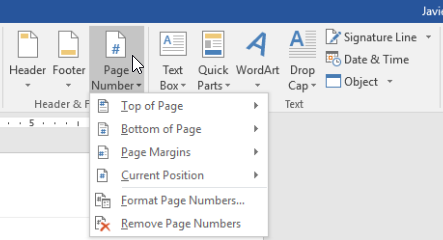
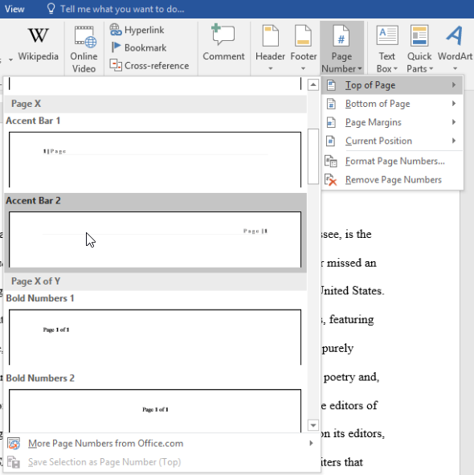
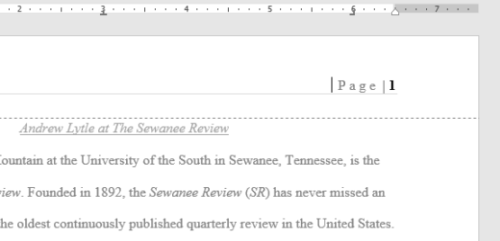
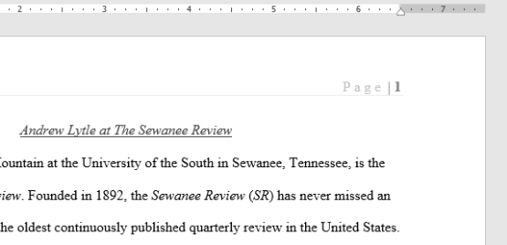
Dacă aveți deja un antet sau un subsol și doriți să adăugați un număr de pagină la acesta, Word are o opțiune de a insera automat numărul paginii în antetul sau subsolul existent. În exemplul nostru, vom adăuga numerotarea paginilor la antetul documentului nostru.
- Faceți dublu clic oriunde pe antet sau subsol pentru a-l debloca.
- În fila Design , faceți clic pe comanda Număr pagină. În meniul care apare, treceți cu mouse-ul peste Poziția curentă și selectați stilul de numerotare a paginii dorit.
- Va apărea numerotarea paginilor.
- Când ați terminat, apăsați tasta Esc.


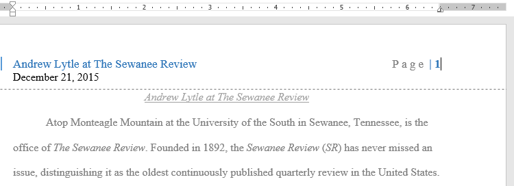
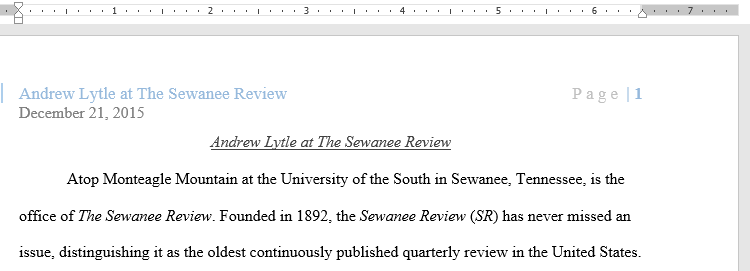
În unele documente, este posibil să nu doriți ca prima pagină să afișeze numărul paginii. Puteți ascunde numărul primei pagini fără a afecta restul paginilor.
- Faceți dublu clic pe antet sau subsol pentru a-l debloca.
- Din fila Design, plasați o bifă lângă Prima pagină diferită . Antetul și subsolul vor dispărea de pe prima pagină. Dacă doriți, puteți introduce ceva nou în antet sau subsol și va afecta doar prima pagină.
.png)
Word vă permite să reporniți numerotarea paginilor pe orice pagină a documentului dvs. Puteți face acest lucru inserând o pauză de secțiune și selectând numărul cu care doriți să reporniți numerotarea. În exemplul nostru, vom reporni numerotarea paginilor pentru secțiunea Lucrări citate a documentului nostru.
- Plasați punctul de inserare în partea de sus a paginii pentru care doriți să reporniți numerotarea paginilor. Dacă există text pe pagină, plasați punctul de inserare la începutul textului.
- Selectați fila Layout, apoi faceți clic pe comanda Breaks. Selectați Pagina următoare din meniul derulant care apare.
- O pauză de secțiune va fi adăugată la document.
- Faceți dublu clic pe antetul sau subsolul care conține numărul paginii pe care doriți să o reporniți.
- Faceți clic pe comanda Număr pagină. În meniul care apare, selectați Formatare numere de pagină.
- Va apărea o casetă de dialog. Faceți clic pe butonul Începe la: În mod implicit, va începe la 1. Dacă doriți, puteți schimba numărul. Când ați terminat, faceți clic pe OK.
- Numerotarea paginilor va reporni.
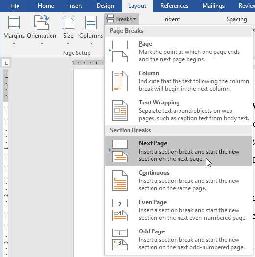
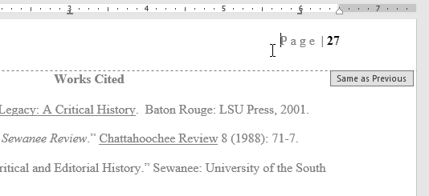
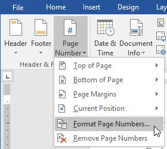
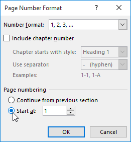
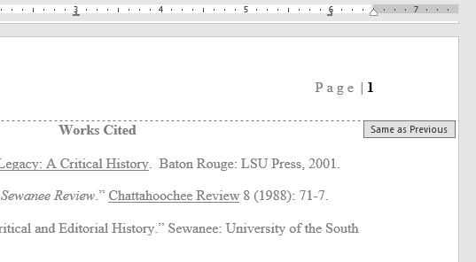